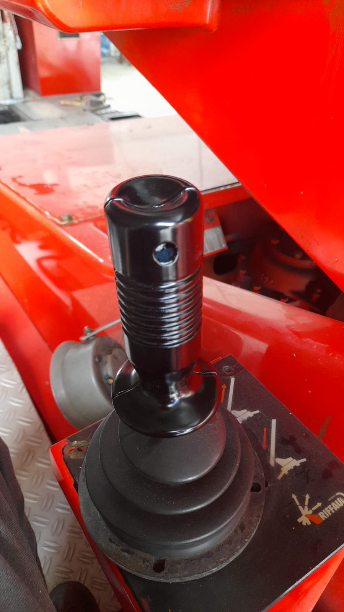
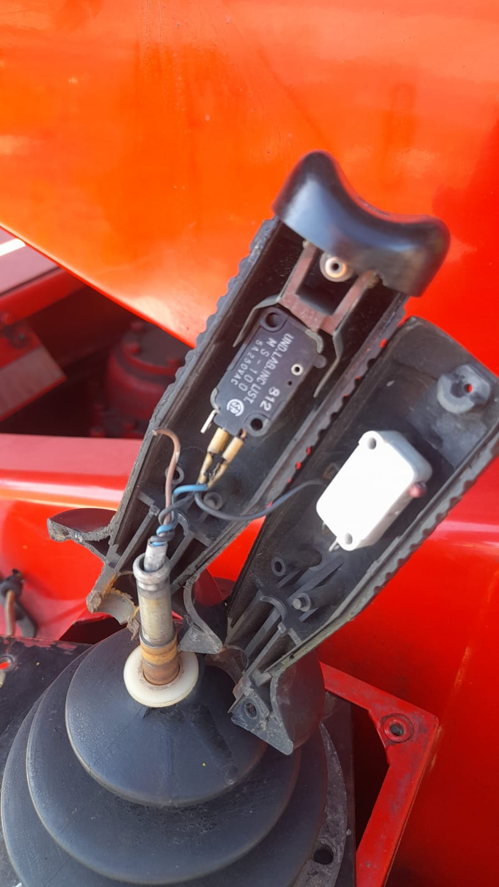
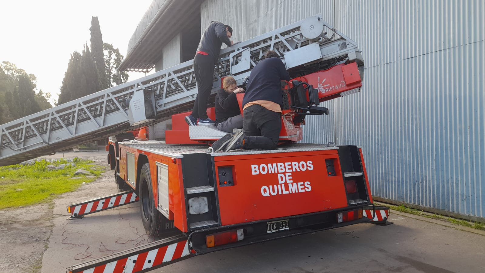

CAMION DE BOMBEROS
Durante el 2022, como parte de las horas profesionalizantes a cumplir para poder obtener el titulo de tecnico avionico, se dio a la escuela por parte de los bomberos de la ribera de Quilmes, un camion el cual habia sufrido un choque, lo que provocó que la parte del movimiento de la escalera que se encuentra sobre el mismo deje de funcionar. Esta, lo hacia mediante un PLC, en el que se tuvo que controlar todo el conexionado para poder hacerlo funcionar otra vez. Tambien, los mandos ubicados en sa silla lateral de la escalera estaban en pesimo estado y sostenidos con cinta, lo que se hizo fue realizar el diseño en 3D para reemplazar esas piezas y luego de mandarlas a pintar colocarlas en el camion.


